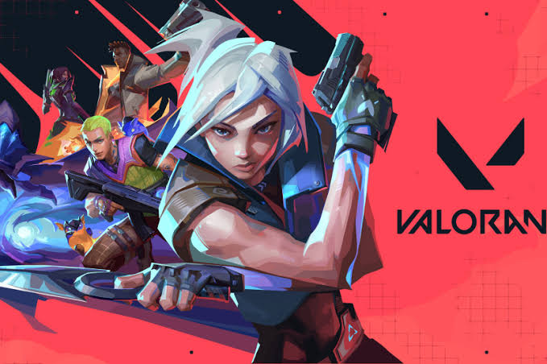
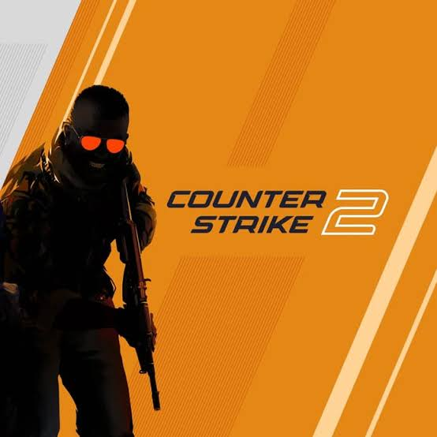
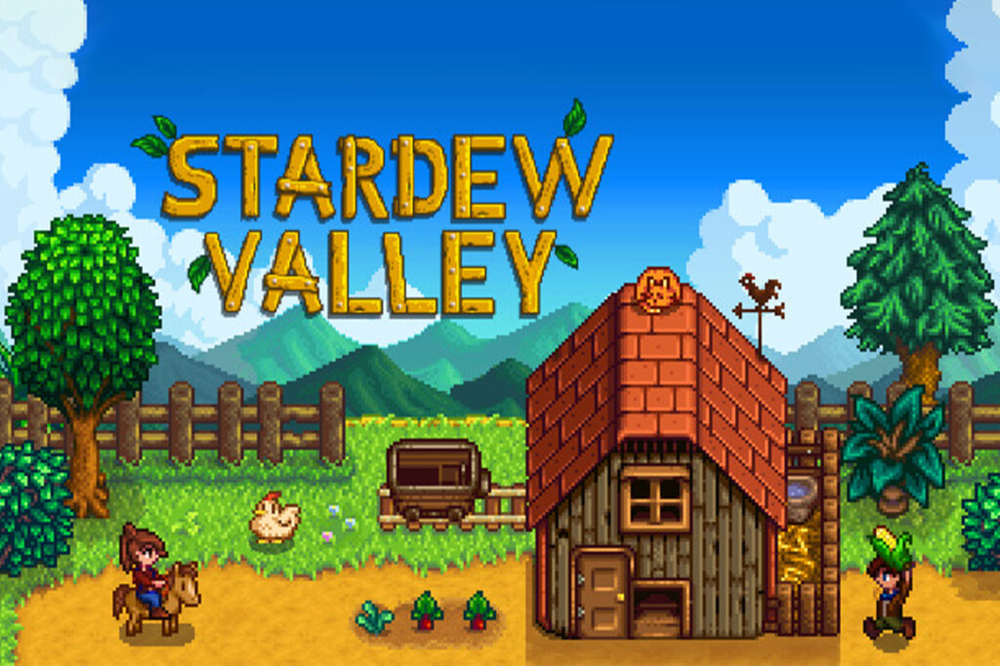

นายตันหนาก เลาเทาะ
ชื่อเล่น: ก๋วยเจ๋งสวัสดีครับ นี่คือหน้าเว็บแนะนำตัวของผม รวมเกมที่ผมชอบเล่นและเพลงที่ชอบที่สุด 5 อันดับเอาไว้ในที่เดียว
Top 5 เกมที่ชอบที่สุด

เกมที่ 1: Valorant
เกมนี้คือที่สุดในใจเพราะเกมเป็นแนว FPS Shooting ที่สามารถเล่นกับเพื่อนได้สูงสุด 5 คนโดยเกมเน้นตวามสามัคคีเล่นด้วยกันและสื่อสารกันเพื่อเอาชนะฝ่ายตรงข้าม

เกมที่ 2: CS2
เกมนี้คือที่สุดในใจเพราะเกมเป็นแนว FPS Shooting ที่สามารถเล่นกับเพื่อนได้สูงสุด 5 คนโดยเกมเน้นตวามสามัคคีเล่นด้วยกันและสื่อสารกันเพื่อเอาชนะฝ่ายตรงข้าม

เกมที่ 3: Roblox
เรื่องนี้คือที่สุดในใจเพราะเป็นเกมแบบ platform ที่ข้างในจะมีเกมให้เล่นอีกมากมายและเรายังสามารถสร้างเกมเพื่อให้ผู้เล่นคนอื่นเข้ามาเล่นเกมที่เราสร้างขึ้นมาได้อีกด้วย แถมเกมนี้ยังสามารถเล่นกับเพื่อนได้หลายคนด้วย

เกมที่ 4: Stardew Valley
เรื่องนี้คือที่สุดในใจเพราะเป็นเกมที่กะว่าจะมาเล่นฆ่าเวลา แต่พอรู้ตัวอีกทีก็ผ่านไปหลายชั่วโมงแล้วเป็นเกมที่ทำให้เรารู้สึกชิวและผ่อนคลายเพราะด้วยบรรยากาศและเสียงเพลงในเกม

เกมที่ 5: Meccha chameleon
เรื่องนี้คือที่สุดในใจเพราะเป็นเกมที่สามารถนำมาเล่นขำๆกับเพื่อนได้แถมยังเล่นกับเพื่อนได้หลายคนอีกด้วย